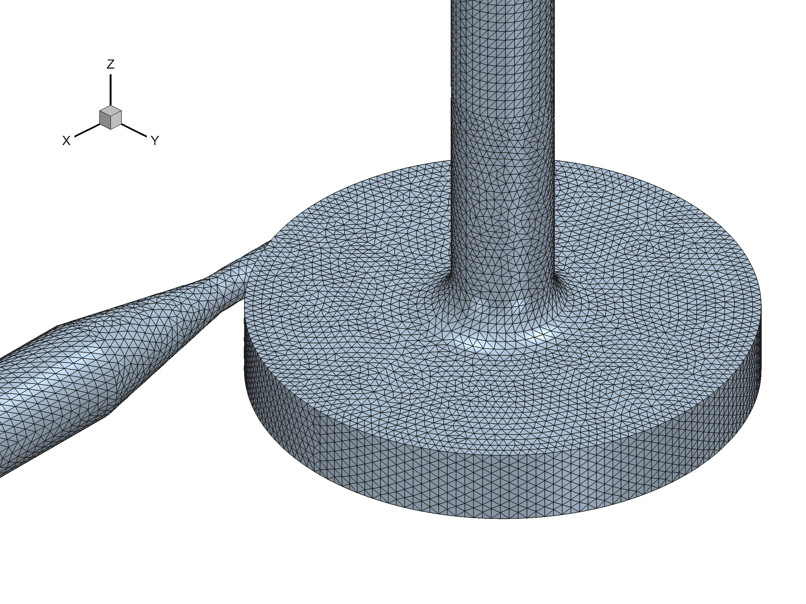
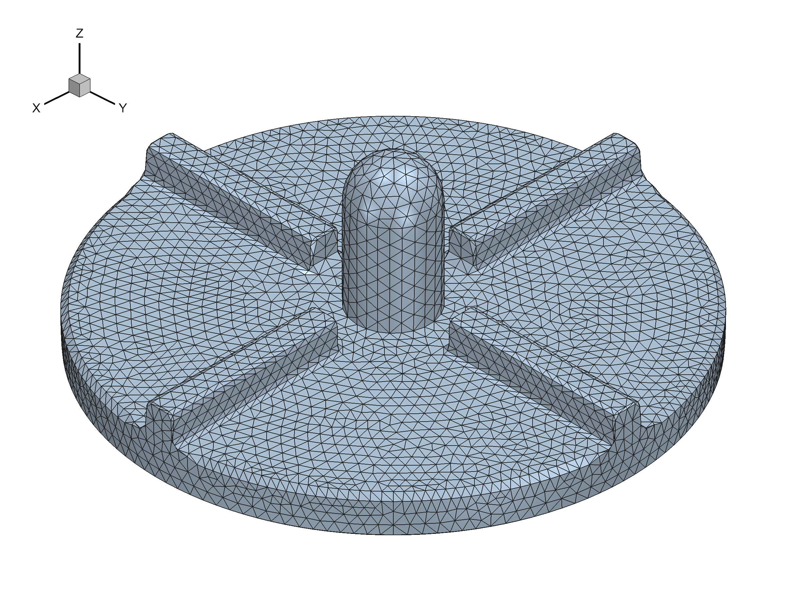
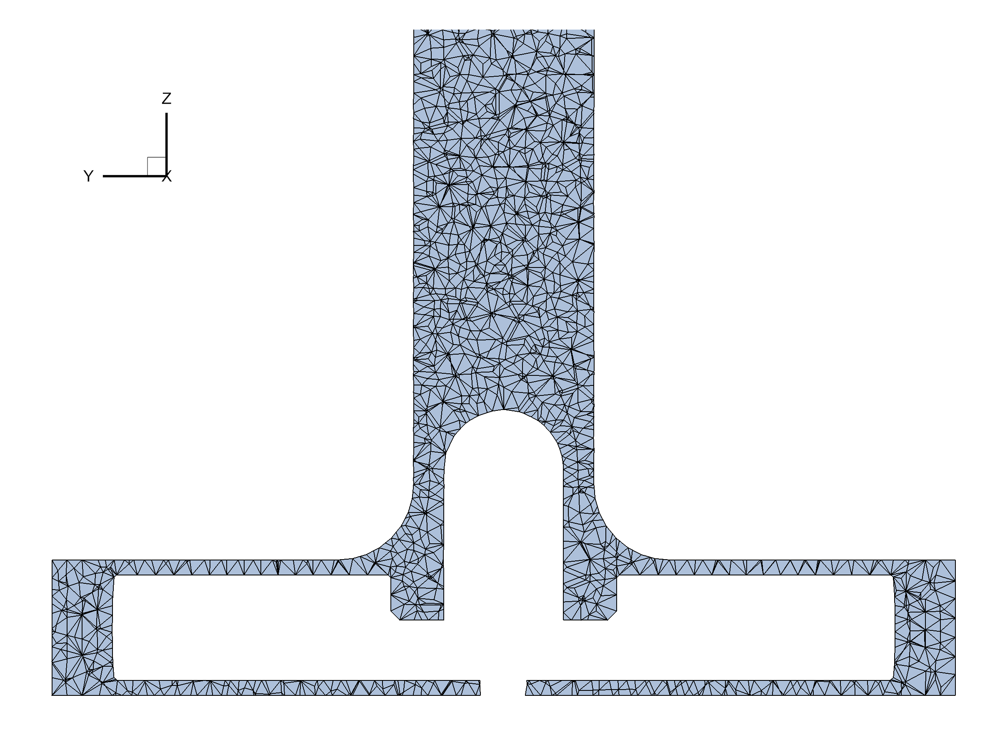
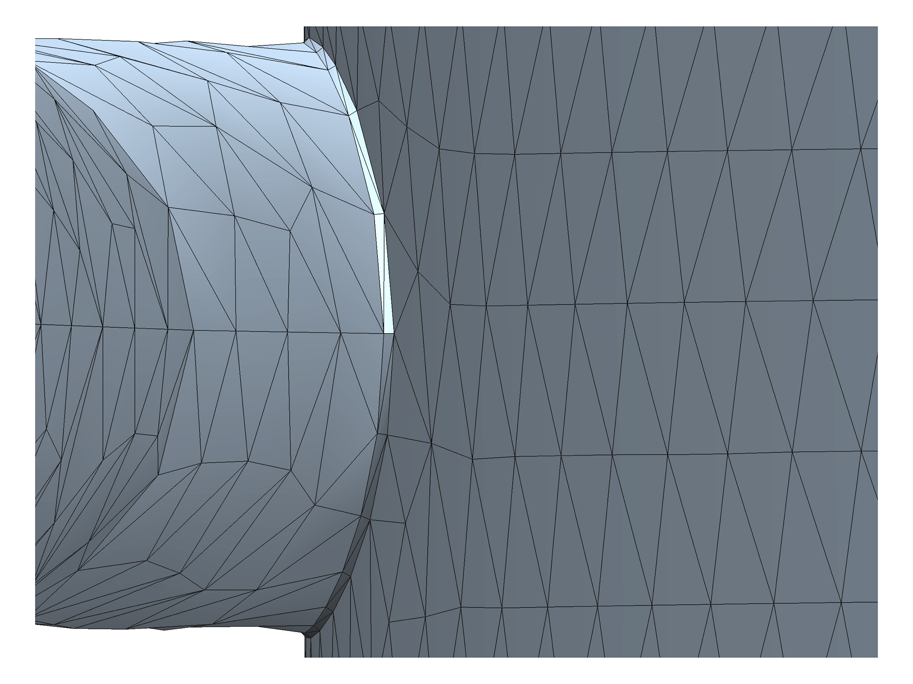

|
|
Mesh Image Files for Interlaboratory Study 2: Blood Pump
Housing Image Rotor Image Rotor
Blade End Cross-Section
Image of YZ Plane Outlet Fillet
Please provide five image files showing the mesh you
used for the case of pump flow rate = 6.0 L/min and pump speed = 3500 RPM only: the housing, rotor, rotor blade end, a
cross-section of the mesh on the yz plane at x=0, and the outlet
fillet. Below are example images that are coarsely meshed. Note
that they are not from any simulation. Please provide 2400 x 1800 dpi
images, in PNG format.
Image of Housing Mesh (click on image to
see a larger view)
- File
name = "housing_mesh.png"
- Please
use an isometric viewpoint for the housing image (with axes oriented as
below), without perspective.

Back to Top
Image of Rotor Mesh (click on image to see
a larger view)
- File
name = "rotor_mesh.png"
- Please
use an isometric viewpoint for the rotor image (with axes oriented as
below), without perspective.

Back to Top
Image of Rotor Blade End (click on image to
see a larger view)
- File
name = "rotor_blade_mesh.png"
- This is
a close-up of one of the blade ends, to show how you meshed the blade
fillets
- Please
use an isometric viewpoint for the rotor blade image (with axes oriented
as below), without perspective.
Back to Top
Cross-sectional Image of Mesh of
yz plane at x = 0 (click on image to see a larger view)
- File
name = "yz_cross_section_mesh.png"
- Please display
the cross-section flat on the yz plane, without perspective.

Back
to Top
Mesh of outlet fillet (click to see a
larger view)
- File
name = "outlet_fillet_mesh.png"
- This is a
closeup of the fillet around the outlet, showing the cutwater and
portions of the housing rim and throat.
- Please
display the mesh oriented with the z-axis upward, and parallel to the
viewing plane. The x-y angle is somewhat arbitrary, but please
make sure the vertical edges of the fillet are visible. Provide
sufficient magnification that your mesh is visible. The width of
the fillet will provide scale. Please show without perspective.

Back
to Top
Back To Interlaboratory Study 2: Blood Pump Information
Page
|